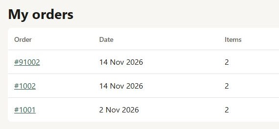

Another customer's order in "My orders"
The order-history test passed while a stranger's order sat at the top of the list. Fixed with one appended check: exactly the customer's own two orders, no other rows.
Tripwire breaks your running app one realistic way at a time, replays your Kane CLI suite against each broken version, and hands every bug the tests missed to your coding agent. A fix only counts when Kane proves it.
Break it yourself
A tiny cart, and two tests a coding agent might write for it. Pick a bug and watch which test notices. This runs in your browser; the real tool does it to your own app over the network, with Kane CLI driving a real Chrome.
Pick a bug on the left.
What it found
Both suites were written by fresh Claude Code sessions that were never told about Tripwire. These are screenshots from Kane's own evidence packs, taken at the end of runs that passed.

The order-history test passed while a stranger's order sat at the top of the list. Fixed with one appended check: exactly the customer's own two orders, no other rows.

A duplicated row in TodoMVC, the counter still saying 3 items left, and a replayed check that the list shows exactly three items passed anyway.
Strict replay failed and triage named the bug. With default healing on, the re-authored check read the hidden row from the DOM and passed. Tripwire reports these as masked.
How it works
Tripwire sits between the browser and your app. Your code and your tests stay as they are; point the tests at the proxy and run one command.
A proxy rewrites one response or one control: a wrong total, a 500 swallowed, a missing button.
Kane CLI replays the suite from cache in a real Chrome, healing off.
An inverted Kane policy fails the verdict when every test passed while the app was broken.
Each survivor, with a screenshot, goes to Claude Code or Codex. It may only append one step.
The new test must pass on the real app and fail on the broken one, or it is reverted.
Claude Code can't finish while Kane tests changed since the last run or the score is below the bar. Recorded live.
Acceptance criteria as owed, proven and guarded, or proven but unguarded: tested, yet a bug that broke them got past.
Bugs that never reach the screen are flagged as suspected equivalents instead of counted silently. Only a person can exclude one.
The bugs it plants
Generated from the traffic and pages your suite actually produced, so every bug is one a test could have seen. Hover or tab to a name for what it breaks.
Measured, not claimed
Kane CLI 0.10.5, 18 to 20 November 2026. Score = bugs caught ÷ (caught + missed + masked by healing).
| Run | Bugs | Score |
|---|---|---|
| Agent's first draft | 40 | 78.4% |
| After 5 proven fixes | 40 | 91.9% |
| Fresh re-run, harder set with domain bugs | 50 | 78.7% |
| After 3 more proven fixes | 50 | 85.1% |
| Run | Bugs | Score |
|---|---|---|
| Agent's first draft | 18 | 77.8% |
| After 4 proven fixes | 18 | 100% |
| Incremental re-check | 17 | 94.1% |
| After 1 more proven fix | 17 | 100% |
Kane's checks are AI-judged, so a single kill or survival is strong evidence, not proof; the reports keep every run, screenshot, triage and fix. CI runs the same tool against real Kane on Linux on every manual dispatch.
Install it tonight
Node 18+, Chrome, and a TestMu AI account. Point your *_test.md files at the proxy (url: http://localhost:8080), start your app, then: